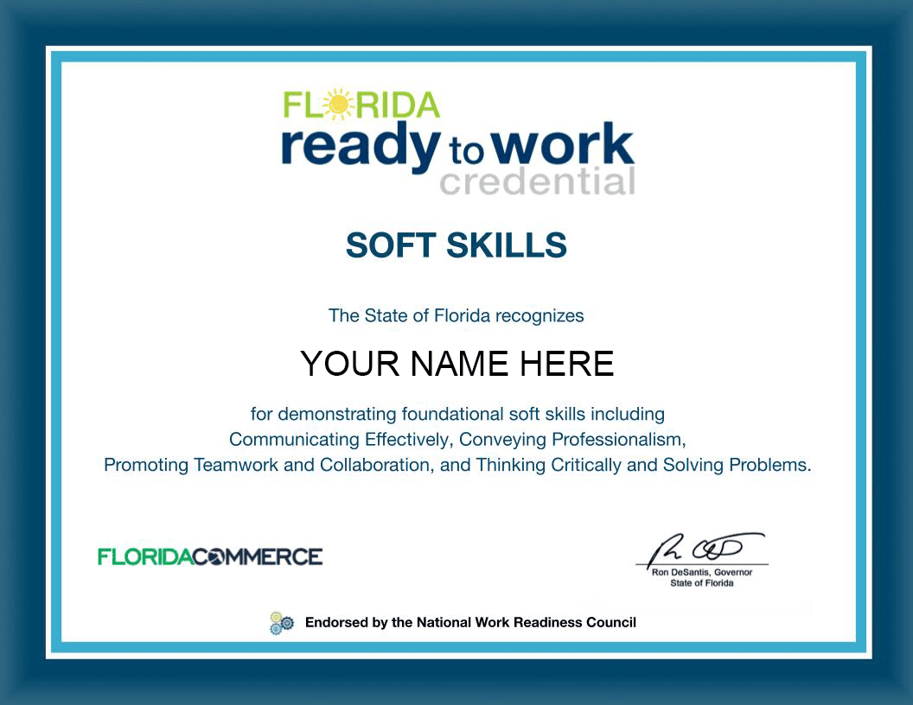
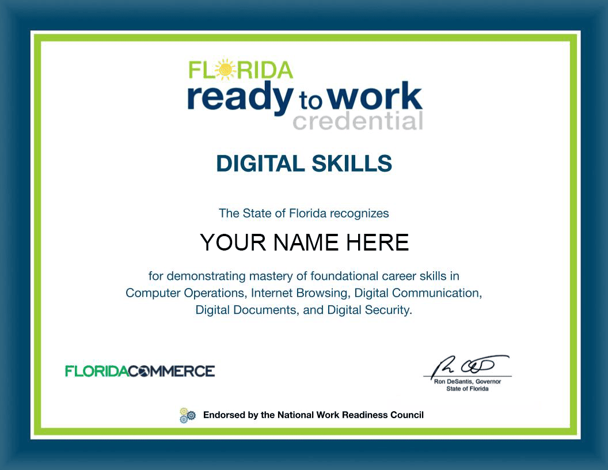

01 / CREATIVE ARTS
Art & Design
Students interested in creativity can explore photography, graphic design, illustration, and ceramics. Their projects offer opportunities to develop artistic skills and express new ideas.
View ProjectsPOLK STATE COLLEGE
Explore. Prepare. Succeed.
ETE helps students recognize their strengths, explore career possibilities, and prepare for their next steps after college.
ETE students can try different subjects, activities, and workplace experiences to discover what they enjoy. Their interests and strengths can help guide future career decisions.
Students explore potential career paths through classes, creative projects, and hands-on workplace experiences.
01 / CREATIVE ARTS
Students interested in creativity can explore photography, graphic design, illustration, and ceramics. Their projects offer opportunities to develop artistic skills and express new ideas.
View Projects02 / BUSINESS
Business-related experiences help students strengthen communication, organization, and teamwork. They also introduce students to responsibilities found in professional workplaces.
03 / EDUCATION
Students interested in helping others can explore education, childcare, and community support. These fields encourage patience, communication, and teamwork.
04 / TECHNOLOGY & MEDIA
Students explore film, web development, photography, gaming, and digital media. Creative projects help them practice design, storytelling, and problem-solving.
View Projects05 / HOSPITALITY
Hospitality and tourism experiences introduce students to service-oriented careers. They practice customer service, communication, and teamwork along the way.

Fictitious Horror Film Poster by Autumn Heffner
Students do not have to limit themselves to one interest. Exploring different subjects helps them discover skills that can be useful across many career paths.
Courses and activities may include digital media, film, web development, wellness, ASL, ceramics, and photography.
ETE gives students opportunities to build career-ready skills and earn credentials they can highlight on a resume.
Florida Ready to Work credentials help students demonstrate skills developed through training. Students can include earned credentials on their resumes and discuss them with potential employers.

CREDENTIAL 01

Focuses on professional skills such as communication, teamwork, professionalism, and workplace responsibility.
CREDENTIAL 02

Focuses on digital knowledge and skills used in modern workplaces.
Career preparation goes beyond choosing a job. Students practice professional habits and everyday workplace skills that help build confidence.
Internships, field trips, and workplace visits allow students to see different work environments and learn about the responsibilities of employees.

Internships allow students to apply what they learn in class while practicing teamwork, responsibility, and professional communication.
Explore Internship Experiences →
Workplace visits and field trips introduce students to different businesses, careers, and work environments.
Explore Workplace Experiences →After ETE, students may seek employment, continue their education, or pursue additional training. Their college and workplace experiences can help them move forward with greater confidence.
The goal is to help every student create a future that reflects their interests, strengths, and goals.